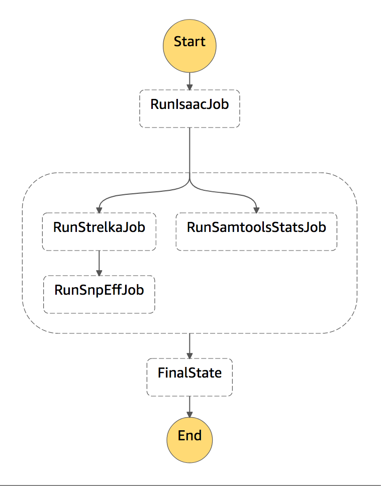

Skip to content
Genomics Workflows on AWS
Step Functions Workflow Examples
Type to start searching
Contribute
Genomics Workflows on AWS
Contribute
Overview
Disclaimer
Quick Start
Core Environment
Core Environment
Introduction
Data Storage
Permissions
Compute Resources
AWS Batch
Customized Deployment
Building a Custom Distribution
Workflow Orchestration
Workflow Orchestration
Introduction
AWS Step Functions
AWS Step Functions
Overview
Cromwell
Cromwell
Overview
Examples
Trouble Shooting
Nextflow
Nextflow
Overview
Trouble Shooting
Cost Effective Workflows
Step Functions Workflow Examples
THIS IS A STUB

this was created from
this file
.